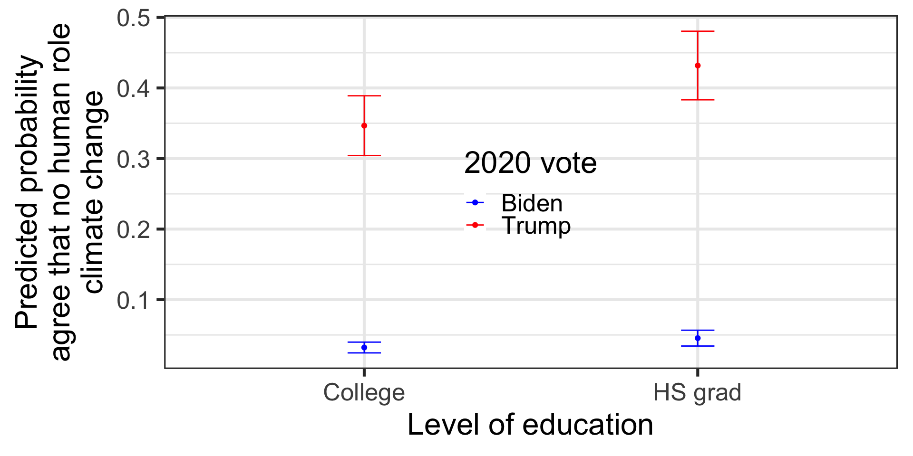
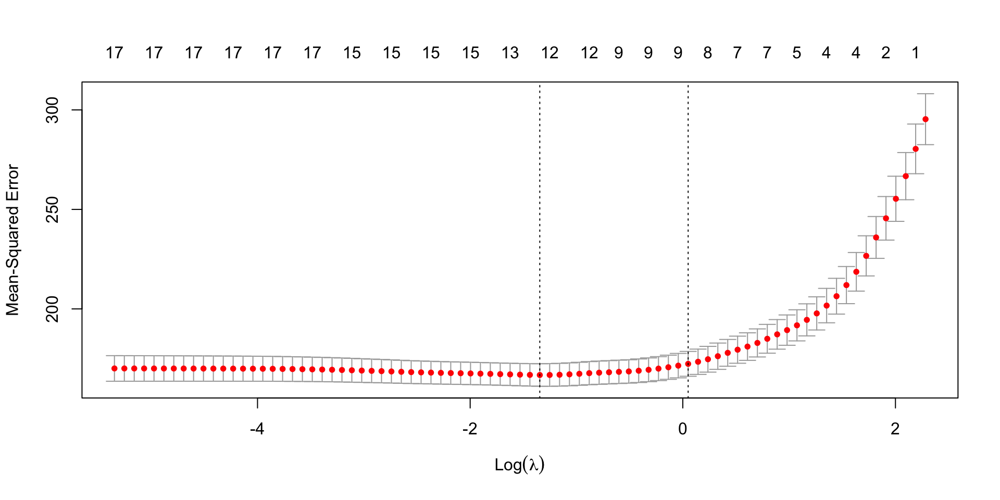

library(tidyverse)
library(ggplot2)
library(devtools)
install_github("jamesmartherus/anesr")
library(anesr)
data("socialmedia_2020")
socialmedia_2020 <- socialmedia_2020 %>%
mutate(derived_climate_nohuman =
case_when(c_self %in% c(1, 2) ~ TRUE,
c_self %in% c(3, 4) ~ FALSE,
TRUE ~ NA),
derived_age = case_when(profile_age == "80+" ~ 80,
TRUE ~ as.numeric(profile_age)),
derived_female = profile_gender == 2,
derived_raceth =
case_when(profile_racethnicity == 1 ~ "White non-Hispanic",
profile_racethnicity == 2 ~ "Black non-Hispanic",
profile_racethnicity == 3 ~ "Other non-Hispanic",
profile_racethnicity == 4 ~ "Hispanic"),
derived_educ =
case_when(profile_educ5 == 1 ~ "< High School",
profile_educ5 == 2 ~ "HS grad",
profile_educ5 == 3 ~ "Some college",
profile_educ5 == 4 ~ "College",
profile_educ5 == 5 ~ "Professional school"),
derived_vote = case_when(vote20d1 == 1 ~ "Trump",
vote20d1 == 2 ~ "Biden",
vote20d1 != -7 ~ "Other",
TRUE ~ NA))Session 4: Model Visualization
Prof. Rebecca A. Johnson
2024-09-16
Intro
Overview: three forms of model visualization
Statistical models and uncertainty
Machine learning models and hyperparameters
Machine learning models and performance
Statistical models and uncertainty
Motivation
Important to represent not only point estimates from models but also the uncertainty around that point estimate
Two general techniques:
- Visualizing the coefficients themselves + confidence intervals around the coefficient
- Using the coefficients to generate predicted values for different hypothetical cases
Throughout, can also show the raw data to supplement the statistical summaries
Example model
Data: ANES social media study in 2020 Question: climate change
Pre-modeling cleaning
Modeling
Comparing two summaries
- Raw summary
tidysummary viabroom: can be easier for accessing column names to plot
Call:
lm(formula = formula(sprintf("%s ~ %s", dv, paste(covars, collapse = "+"))),
data = socialmedia_2020)
Residuals:
Min 1Q Median 3Q Max
-0.60481 -0.17693 -0.06206 0.01226 1.02861
Coefficients:
Estimate Std. Error t value Pr(>|t|)
(Intercept) 0.161205 0.031613 5.099 3.52e-07 ***
derived_age 0.001100 0.000310 3.550 0.000388 ***
derived_femaleTRUE -0.049631 0.009972 -4.977 6.64e-07 ***
derived_racethHispanic -0.065446 0.020384 -3.211 0.001331 **
derived_racethOther non-Hispanic -0.059489 0.023642 -2.516 0.011889 *
derived_racethWhite non-Hispanic -0.095135 0.016754 -5.678 1.43e-08 ***
derived_educCollege -0.076642 0.027320 -2.805 0.005043 **
derived_educHS grad -0.028568 0.028368 -1.007 0.313959
derived_educProfessional school -0.080266 0.028294 -2.837 0.004573 **
derived_educSome college -0.052270 0.026518 -1.971 0.048760 *
derived_voteOther 0.131786 0.016619 7.930 2.62e-15 ***
derived_voteTrump 0.401782 0.010966 36.638 < 2e-16 ***
---
Signif. codes: 0 '***' 0.001 '**' 0.01 '*' 0.05 '.' 0.1 ' ' 1
Residual standard error: 0.3672 on 5712 degrees of freedom
(26 observations deleted due to missingness)
Multiple R-squared: 0.2115, Adjusted R-squared: 0.21
F-statistic: 139.3 on 11 and 5712 DF, p-value: < 2.2e-16# A tibble: 12 × 5
term estimate std.error statistic p.value
<chr> <dbl> <dbl> <dbl> <dbl>
1 (Intercept) 0.161 0.0316 5.10 3.52e- 7
2 derived_age 0.00110 0.000310 3.55 3.88e- 4
3 derived_femaleTRUE -0.0496 0.00997 -4.98 6.64e- 7
4 derived_racethHispanic -0.0654 0.0204 -3.21 1.33e- 3
5 derived_racethOther non-Hispanic -0.0595 0.0236 -2.52 1.19e- 2
6 derived_racethWhite non-Hispanic -0.0951 0.0168 -5.68 1.43e- 8
7 derived_educCollege -0.0766 0.0273 -2.81 5.04e- 3
8 derived_educHS grad -0.0286 0.0284 -1.01 3.14e- 1
9 derived_educProfessional school -0.0803 0.0283 -2.84 4.57e- 3
10 derived_educSome college -0.0523 0.0265 -1.97 4.88e- 2
11 derived_voteOther 0.132 0.0166 7.93 2.62e- 15
12 derived_voteTrump 0.402 0.0110 36.6 3.77e-264Plotting the result
cl_toplot <- tidy(climate_attitudes, conf.int = TRUE) %>%
mutate(term_clean = gsub("derived\\_", "", term)) %>%
filter(!grepl("Intercept", term_clean))
p <- ggplot(cl_toplot,
aes(x = reorder(term_clean, estimate), y = estimate,
ymin = conf.low,
ymax = conf.high)) +
geom_pointrange() +
ylab("Estimate from OLS model\n(positive = more likely to view no human role\nin climate change)") +
xlab("Predictor") +
geom_hline(yintercept = 0, linetype = "dashed", color = "red") +
coord_flip() +
theme_bw() Plotting the result
Exploring the raw relationships
vote_v_climate <- socialmedia_2020 %>%
filter(!is.na(derived_climate_nohuman) &
!is.na(derived_vote)) %>%
group_by(derived_vote) %>%
summarise(perc = mean(derived_climate_nohuman))
p <- ggplot(vote_v_climate, aes(x = derived_vote,
y = perc)) +
geom_bar(stat = "identity") +
xlab("2020 vote choice") +
ylab("Proportion view no human role in\nclimate change") +
geom_label(aes(x = derived_vote,
y = perc,
label = round(perc, 2))) +
theme_bw() +
ylim(0, 0.5)Exploring the raw relationships
Where we are
- Statistical models and uncertainty
- Raw coefficient plots
- Predicting for different hypotheticals
Terminology
- Predicted values: regression models; not necessarily bounded within 0-1 range
- Predicted probabilities: logistic regression; always bounded within 0-1 range
Logit model of same outcome
climate_attitudes_glm <- glm(formula(sprintf("%s ~ %s",
dv, paste(covars, collapse = "+"))),
data = socialmedia_2020,
family = "binomial")
tidy(climate_attitudes_glm) %>%
mutate_if(is.numeric, round, digits = 2) # A tibble: 12 × 5
term estimate std.error statistic p.value
<chr> <dbl> <dbl> <dbl> <dbl>
1 (Intercept) -1.94 0.23 -8.44 0
2 derived_age 0.01 0 3.59 0
3 derived_femaleTRUE -0.37 0.07 -4.91 0
4 derived_racethHispanic -0.75 0.17 -4.5 0
5 derived_racethOther non-Hispanic -0.71 0.19 -3.79 0
6 derived_racethWhite non-Hispanic -0.99 0.14 -7.07 0
7 derived_educCollege -0.53 0.19 -2.78 0.01
8 derived_educHS grad -0.17 0.2 -0.88 0.38
9 derived_educProfessional school -0.56 0.2 -2.77 0.01
10 derived_educSome college -0.32 0.18 -1.77 0.08
11 derived_voteOther 1.41 0.14 10.3 0
12 derived_voteTrump 2.77 0.1 27.8 0 Creating hypothetical values
Important to ensure within the bounds of the data!
< High School College HS grad Professional school Some college
Biden 88 795 352 684 1072
Other 52 124 120 78 247
Trump 76 516 349 286 895mode <- function(codes){
which.max(tabulate(codes))
}
## compare college trump v biden voters to hs trump voter
## others at their median or median values either
## within group or across the full sample
data_topredict <- data.frame(derived_vote =
c(rep("Trump", 2),
rep("Biden", 2)),
derived_educ =
rep(c("College",
"HS grad"),
2)) %>%
mutate(derived_female = TRUE,
derived_raceth = "White non-Hispanic",
derived_age = round(mean(socialmedia_2020$derived_age, na.rm = TRUE)))
data_topredict derived_vote derived_educ derived_female derived_raceth derived_age
1 Trump College TRUE White non-Hispanic 50
2 Trump HS grad TRUE White non-Hispanic 50
3 Biden College TRUE White non-Hispanic 50
4 Biden HS grad TRUE White non-Hispanic 50Generating predictions with uncertainty: base R
## base R - list with predictions, se.fit, etc.
predicted_val <- predict(climate_attitudes_glm,
newdata = data_topredict,
se.fit = TRUE,
type = "response")
predicted_val$fit
1 2 3 4
0.34660772 0.43182737 0.03218038 0.04547270
$se.fit
1 2 3 4
0.021597510 0.024797172 0.003893181 0.005715586
$residual.scale
[1] 1## cleaning up
data_topredict_wpred <- data_topredict %>%
mutate(predict_prob = predicted_val$fit,
predict_se = predicted_val$se.fit,
lower = predict_prob - 1.96*predict_se,
upper = predict_prob + 1.96*predict_se)
data_topredict_wpred %>%
select(derived_vote, derived_educ,
predict_prob, lower, upper) derived_vote derived_educ predict_prob lower upper
1 Trump College 0.34660772 0.30427660 0.38893884
2 Trump HS grad 0.43182737 0.38322491 0.48042982
3 Biden College 0.03218038 0.02454975 0.03981102
4 Biden HS grad 0.04547270 0.03427015 0.05667525Generating predictions with uncertainty: augment in broom
aug_result <- augment(climate_attitudes_glm,
newdata = data_topredict,
type.predict = "response",
se_fit = TRUE) %>%
mutate(lower = .fitted-1.96*.se.fit,
upper = .fitted+1.96*.se.fit)
aug_result %>%
select(derived_vote, derived_educ,
.fitted, lower, upper) # A tibble: 4 × 5
derived_vote derived_educ .fitted lower upper
<chr> <chr> <dbl> <dbl> <dbl>
1 Trump College 0.347 0.304 0.389
2 Trump HS grad 0.432 0.383 0.480
3 Biden College 0.0322 0.0245 0.0398
4 Biden HS grad 0.0455 0.0343 0.0567Plotting the result
p <- ggplot(aug_result, aes(x = factor(derived_educ),
y = .fitted,
group = derived_vote,
color = derived_vote)) +
geom_point() +
geom_errorbar(aes(ymin = lower,
ymax = upper),
width = 0.1) +
ylab("Predicted probability\nagree that no human role\nclimate change") +
xlab("Level of education") +
labs(color = "2020 vote") +
scale_color_manual(values = c("Trump" = "red",
"Biden" = "blue")) +
theme_bw() +
theme(legend.position = c(0.5, 0.5),
legend.background = element_blank()) Plotting the result
Ways to increase transparency of previous plots
For coefficient plots, showing the reference values for categorical variables
For predicted probability plots, showing the values to which other covariates are set
Where we are
Statistical models and uncertainty
Machine learning models and hyperparameters
Machine learning models and performance
ML and hyperparameters
Goal: transparency within modeling process
- If the choice of the final model involved some form of hyperparameter selection, helping readers/consumers of the result understand that process
- Some packages have built-in visualization for hyperparameters (example
glmnet); important to understand the inputs to these/be able to create ourselves
Example - Lasso (one form of penalized regression)
Predict college graduation rate using all other variables in the data
Built-in plot
Built-in plot
- X axis shows the log(\(\lambda\)) value
- Y axis shows the mean squared error (smaller = better)
- Vertical lines show the value for lambda that minimizes the mean squared error (first line) as well as the value within 1 standard error of the minimum lambda that regularizes the coefficients the most
What else can we visualize?
Which coefficients are regularized to zero at the minimum value of \(\lambda\)?
18 x 1 sparse Matrix of class "dgCMatrix"
s1
(Intercept) 3.861348e+01
PrivateYes .
Apps 2.630667e-05
Accept .
Enroll .
Top10perc 4.061556e-02
Top25perc 1.226006e-01
F.Undergrad .
P.Undergrad -4.856720e-04
Outstate 1.042826e-03
Room.Board 1.015134e-03
Books .
Personal -6.001237e-04
PhD .
Terminal .
S.F.Ratio .
perc.alumni 2.075078e-01
Expend . What else can we visualize?
In Wednesday activity, practice visualizing the \(\lambda\) at which a given coefficient gets regularized to 0
Where we are
Statistical models and uncertainty
Machine learning models and hyperparameters
Machine learning models and performance
ML models and performance
Motivation
- Many different performance metrics for classification and regression
- Not going to review all of them— instead, focus on two, commonly-used ones:
- Confusion matrix: refresher on the
square area chartplot - ROC Curve
- Confusion matrix: refresher on the
Confusion matrixes
4 mutually exclusive categories:
- True positive
- False positive
- True negative
- False negative
Step 1: Model estimation
Step 2: Extract predictions
Step 3: Compare true class to predicted class
False negative False positive True negative True positive
88 73 318 298 Visualize using square area chart
Precision-recall curve
- Confusion matrix shows a static true and false positive rate at a fixed threshold for converting the continuous predicted probabilities to a binary class
- Precision-recall curves show how varying that threshold creates tradeoffs between precision (aided by a high threshold) and recall (aided by a low threshold)
First: visualizing the distribution of probabilities relative to class